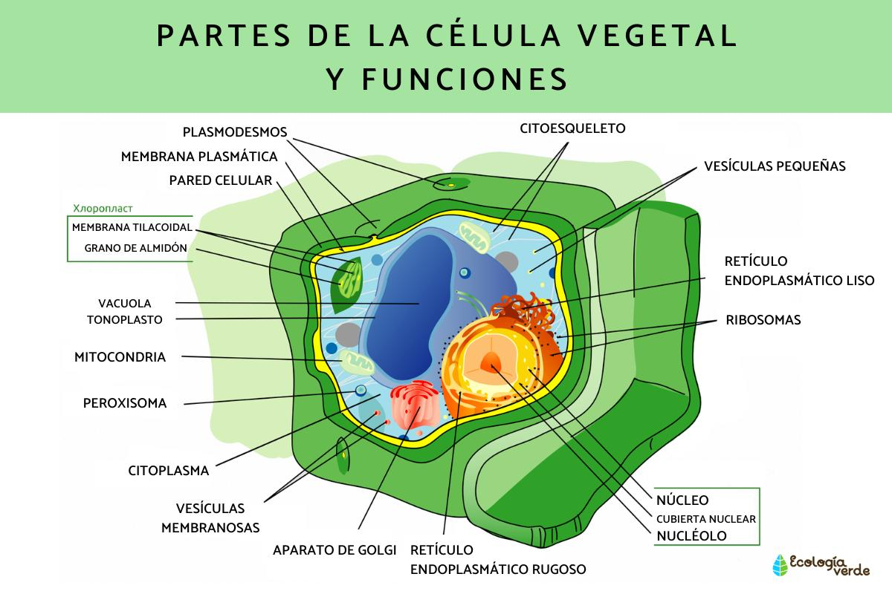
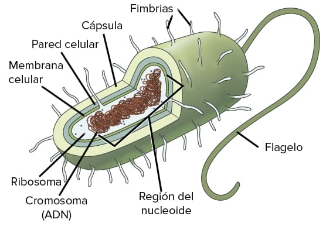

celulas
animal
La célula animal es la unidad estructural y funcional básica de los organismos pertenecientes al reino animal. Como su nombre lo indica, se encuentra presente en animales y está compuesta por diversas estructuras y organelos que le permiten llevar a cabo sus funciones vitales.
La célula animal presenta una membrana plasmática que envuelve y protege el interior de la célula. Esta membrana es semipermeable, lo que significa que controla el paso de sustancias hacia el interior y exterior de la célula.
En el interior de la célula animal se encuentra el citoplasma, una estructura gelatinosa compuesta por agua, proteínas y diversos organelos celulares. Algunos de los organelos más importantes incluyen:
1. Núcleo: Es el centro de control de la célula y contiene el material genético (ADN). Regula las actividades celulares y es responsable de la replicación y transmisión de la información genética.
2. Mitocondrias: Encargadas de la producción de energía en forma de ATP mediante el proceso de respiración celular.
3. Retículo endoplasmático: Una red de membranas interconectadas que participa en la síntesis y transporte de proteínas y lípidos.
4. Aparato de Golgi: Se encarga de modificar, empacar y distribuir las proteínas y lípidos sintetizados por la célula.
5. Lisosomas: Organelos que contienen enzimas digestivas y se encargan de la degradación y reciclaje de materiales orgánicos.
Además de estos organelos, la célula animal también puede presentar otros estructuras como ribosomas, centríolos, peroxisomas, entre otros. Cada uno de ellos cumple una función específica dentro de la célula.
Las células animales son capaces de llevar a cabo procesos vitales como la reproducción, el metabolismo, el crecimiento y la respuesta a estímulos ambientales. Estas células se organizan en tejidos, los tejidos en órganos y los órganos en sistemas, permitiendo la formación de organismos complejos.

vegetal
La célula vegetal es un tipo de célula que se encuentra en los organismos vegetales. Estas células tienen algunas características distintivas en comparación con las células animales.
Una de las principales diferencias es la presencia de una pared celular rígida que rodea la membrana plasmática. Esta pared celular proporciona soporte estructural y protección a la célula, y está compuesta principalmente de celulosa.
Otra característica clave de las células vegetales es la presencia de organelos llamados cloroplastos. Los cloroplastos son los responsables de llevar a cabo la fotosíntesis, un proceso mediante el cual las plantas capturan la energía del sol y la convierten en nutrientes.
Además, las células vegetales suelen tener una gran vacuola central que ocupa una parte significativa de la célula. Esta vacuola almacenaje de agua y nutrientes, y también puede desempeñar un papel en el mantenimiento de la rigidez de la célula.
Otro organelo importante en las células vegetales es el plasmodesmo, que son pequeños canales que conectan las células adyacentes. Estos canales permiten la comunicación y el transporte de sustancias entre las distintas células vegetales.
En resumen, las células vegetales tienen algunas características únicas, como la pared celular, los cloroplastos y la vacuola central. Estas características les permiten llevar a cabo procesos específicos, como la fotosíntesis y el almacenamiento de agua y nutrientes. Estas células son la base de los tejidos y órganos en los organismos vegetales, y desempeñan un papel fundamental en su función y supervivencia.

procariota
Una célula procariota es un tipo de célula que carece de núcleo definido y de organelos membranosos en su citoplasma. Estas células son generalmente más simples en estructura y más pequeñas en tamaño en comparación con las células eucariotas.
En una célula procariota, el material genético, como el ADN, se encuentra disperso en el citoplasma en forma de un solo cromosoma circular o en forma de plásmidos adicionales. No hay una membrana nuclear que separe el material genético, lo que permite una mayor accesibilidad para llevar a cabo la replicación y la transcripción génica.
El citoplasma de una célula procariota contiene ribosomas, que son responsables de la síntesis de proteínas. Sin embargo, a diferencia de una célula eucariota, los ribosomas no están asociados con una membrana y se encuentran dispersos en el citoplasma.
En cuanto a la estructura celular, las células procariotas generalmente tienen una pared celular, que proporciona rigidez y protección. Además, algunas células procariotas pueden tener una cápsula o una pared celular adicional externa.
Los ejemplos de células procariotas incluyen bacterias y arqueas. Estas células son muy diversas y ocupan una amplia variedad de entornos, siendo capaces de adaptarse y sobrevivir en condiciones extremas.
Aunque las células procariotas son diferentes en estructura y función a las células eucariotas, ambas son fundamentales para la vida en la Tierra y juegan roles importantes en los ecosistemas y en la biología en general.

REGRESAR<